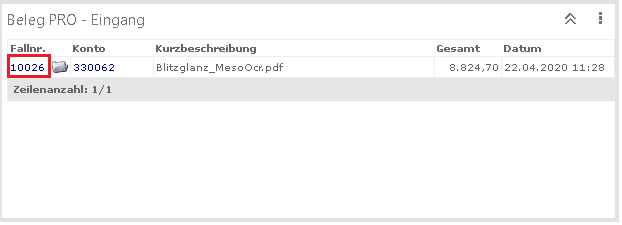
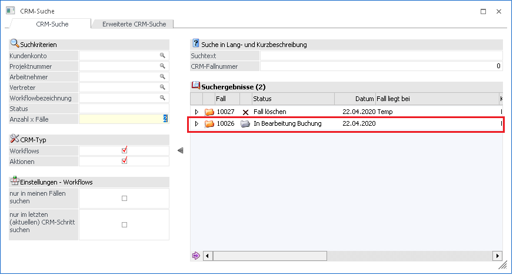
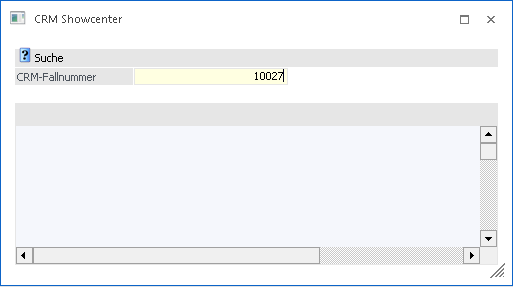
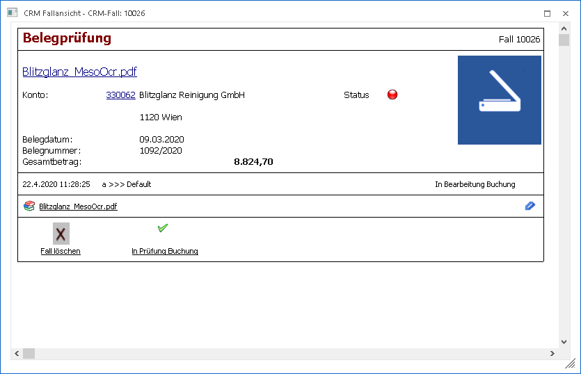
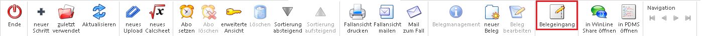
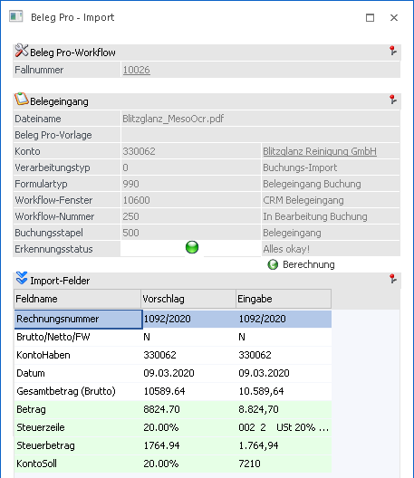

Wenn ein Beleg mit dem Modul "Beleg PRO" eingegangen ist, sollte immer ein Fall geschrieben worden sein. Im Wizard wird ab dem vierten Schritt ein Fall geschrieben bzw. wenn der Eingang über die Verzeichnisüberwachung erfolgte, sollte ebenfalls ein CMR-Fall geschrieben worden sein.
Der Fall kann anschließend über eine CRM-Liste, die CRM-Suche bzw. direkt über die Fallnummer im CRM-Showcenter, aufgerufen werden. In all den Varianten öffnet sich die Fallansicht zum ausgewählten Fall.
CRM-Liste (im Cockpit)

Mit einem Klick auf die Fallnummer innerhalb der Liste (oder im Cockpit) öffnet die Fallansicht.
CRM-Suche

Mithilfe eines Doppelklicks auf den Eintrag in der Tabelle öffnet sich die Fallansicht.
CRM-Showcenter

Wenn eine Fallnummer eingetragen und bestätigt wird, öffnet sich die Fallansicht.
Fallansicht

Wenn man einen Fall in der Fallansicht öffnet, bei welchen der Fall über einen Belegeingang mittels Modul "Beleg PRO" erfasst wurde, ist der Ribbon-Button "Belegeingang" aktiv geschalten.
Hinweis
Falls der Button "Belegeingang" nicht aktiv ist (grau), dann steckt hinter diesen Fall entweder kein Belegeingang über das Modul "Beleg PRO" bzw. wurde die Buchung oder der Beleg bereits fertig gestellt und an die FIBU bzw. FAKT übergeben.

Wenn der Button "Belegeingang" angewählt wird, öffnet sich das XML-Paket, welches hinter diesem Fall steckt, im Menüpunkt "Beleg Pro - Import". Die zuletzt gespeicherten Datensätze und die Dokumenten-Vorschau sind ersichtlich.

Die weitere Vorgehensweise zur Bearbeitung bzw. Übergabe können dem Kapite Beleg Pro - Import entnommen werden.